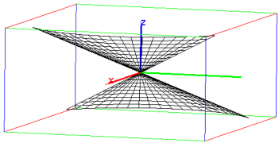

18.3.6 Plotting a line with a point and the slope
The DrawSlp
command can draw a line given a point and a slope.
-
DrawSlp takes three arguments:
a, b and m, real numbers.
- DrawSlp(a,b,m) returns and draws the line through the
point (a,b) with slope m.
Example
